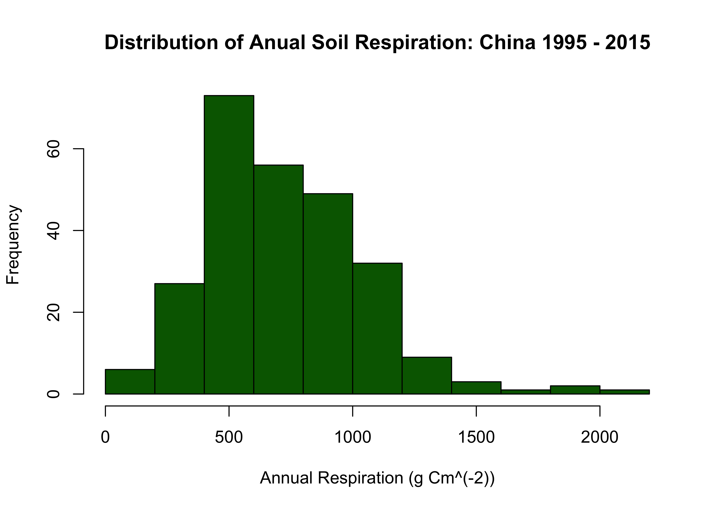
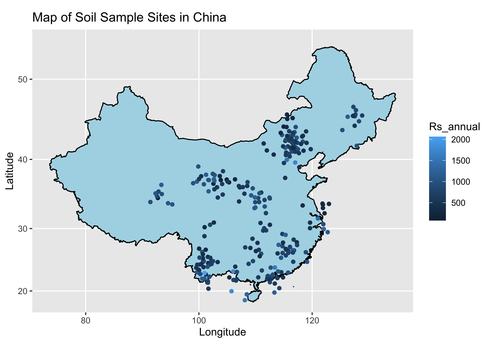
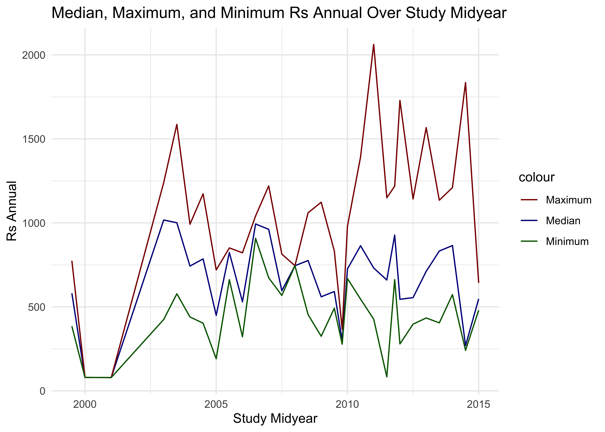

Data Inspection and Cleaning:
## Linking to GEOS 3.11.0, GDAL 3.5.3, PROJ 9.1.0; sf_use_s2() is TRUE## ── Attaching core tidyverse packages ───────────────────────────────────────────────── tidyverse 2.0.0 ──
## ✔ dplyr 1.1.4 ✔ stringr 1.5.1
## ✔ forcats 1.0.0 ✔ tibble 3.2.1
## ✔ lubridate 1.9.3 ✔ tidyr 1.3.0
## ✔ purrr 1.0.2## ── Conflicts ─────────────────────────────────────────────────────────────────── tidyverse_conflicts() ──
## ✖ dplyr::filter() masks stats::filter()
## ✖ dplyr::lag() masks stats::lag()
## ✖ purrr::map() masks maps::map()
## ℹ Use the conflicted package (<http://conflicted.r-lib.org/>) to force all conflicts to become errors## Rows: 663 Columns: 85
## ── Column specification ─────────────────────────────────────────────────────────────────────────────────
## Delimiter: ","
## chr (23): Entry_date, Author, Quality_flag, Contributor, Country, Region, Site_name, Site_ID, Manipul...
## dbl (55): Record_number, Study_number, Study_midyear, YearsOfData, Latitude, Longitude, Elevation, Ag...
## lgl (7): Duplicate_record, Rs_spring, Rs_summer, Rs_autumn, Rs_winter, Rootlitter_flux, TotDet_flux
##
## ℹ Use `spec()` to retrieve the full column specification for this data.
## ℹ Specify the column types or set `show_col_types = FALSE` to quiet this message.## Record_number Entry_date Study_number Author Duplicate_record
## Min. : 276 Length:663 Min. : 1426 Length:663 Mode:logical
## 1st Qu.:6322 Class :character 1st Qu.: 7593 Class :character NA's:663
## Median :7540 Mode :character Median : 8576 Mode :character
## Mean :6809 Mean : 8455
## 3rd Qu.:8228 3rd Qu.:10483
## Max. :9548 Max. :11481
##
## Quality_flag Contributor Country Region Site_name
## Length:663 Length:663 Length:663 Length:663 Length:663
## Class :character Class :character Class :character Class :character Class :character
## Mode :character Mode :character Mode :character Mode :character Mode :character
##
##
##
##
## Site_ID Study_midyear YearsOfData Latitude Longitude Elevation
## Length:663 Min. :1997 Min. :0.50 Min. :18.60 Min. : 81.38 Min. : 2.5
## Class :character 1st Qu.:2010 1st Qu.:1.00 1st Qu.:30.52 1st Qu.:101.20 1st Qu.: 600.0
## Mode :character Median :2012 Median :1.00 Median :37.53 Median :112.13 Median :1324.0
## Mean :2010 Mean :1.08 Mean :36.18 Mean :109.14 Mean :1770.0
## 3rd Qu.:2012 3rd Qu.:1.00 3rd Qu.:42.41 3rd Qu.:116.80 3rd Qu.:2476.0
## Max. :2016 Max. :3.00 Max. :51.14 Max. :128.89 Max. :5100.0
## NA's :7 NA's :4 NA's :24 NA's :24 NA's :241
## Manipulation Manipulation_level Age_ecosystem Age_disturbance Species
## Length:663 Length:663 Min. : 1.00 Min. : 0.00 Length:663
## Class :character Class :character 1st Qu.: 11.75 1st Qu.: 3.00 Class :character
## Mode :character Mode :character Median : 21.00 Median : 20.00 Mode :character
## Mean : 33.01 Mean : 28.54
## 3rd Qu.: 50.00 3rd Qu.: 40.00
## Max. :300.00 Max. :400.00
## NA's :587 NA's :518
## Biome Ecosystem_type Ecosystem_state Leaf_habit Stage
## Length:663 Length:663 Length:663 Length:663 Length:663
## Class :character Class :character Class :character Class :character Class :character
## Mode :character Mode :character Mode :character Mode :character Mode :character
##
##
##
##
## Soil_type Soil_drainage Soil_BD Soil_CN Soil_sand Soil_silt
## Length:663 Length:663 Min. :0.520 Min. : 1.85 Min. : 6.00 Min. : 7.00
## Class :character Class :character 1st Qu.:1.130 1st Qu.: 9.35 1st Qu.:31.85 1st Qu.:20.30
## Mode :character Mode :character Median :1.230 Median :12.55 Median :62.75 Median :20.30
## Mean :1.185 Mean :13.42 Mean :48.23 Mean :31.35
## 3rd Qu.:1.310 3rd Qu.:16.17 3rd Qu.:62.75 3rd Qu.:42.00
## Max. :1.700 Max. :66.67 Max. :95.00 Max. :78.00
## NA's :490 NA's :504 NA's :560 NA's :564
## Soil_clay MAT MAP PET Study_temp Study_precip
## Min. : 9.00 Min. :-5.600 Min. : 102.0 Min. : 785 Min. :-3.800 Min. : 238.8
## 1st Qu.:16.95 1st Qu.: 1.800 1st Qu.: 350.9 1st Qu.:1094 1st Qu.: 1.910 1st Qu.: 290.0
## Median :16.95 Median : 6.800 Median : 450.0 Median :1660 Median : 2.380 Median : 382.1
## Mean :22.27 Mean : 7.096 Mean : 664.1 Mean :1564 Mean : 7.013 Mean : 629.0
## 3rd Qu.:25.00 3rd Qu.:12.900 3rd Qu.: 786.3 3rd Qu.:2000 3rd Qu.:16.750 3rd Qu.: 757.0
## Max. :56.30 Max. :25.000 Max. :2198.0 Max. :2400 Max. :21.100 Max. :2198.0
## NA's :539 NA's :47 NA's :49 NA's :531 NA's :614 NA's :597
## Meas_method Collar_height Collar_depth Chamber_area Time_of_day
## Length:663 Min. : 4.40 Min. : 1.500 Min. : 51.25 Length:663
## Class :character 1st Qu.: 5.00 1st Qu.: 2.500 1st Qu.: 86.50 Class :character
## Mode :character Median : 8.00 Median : 3.000 Median : 314.00 Mode :character
## Mean :11.72 Mean : 4.484 Mean : 403.90
## 3rd Qu.:15.00 3rd Qu.: 5.000 3rd Qu.: 323.49
## Max. :50.00 Max. :40.000 Max. :3700.00
## NA's :350 NA's :65 NA's :30
## Meas_interval Annual_coverage Partition_method Rs_annual Rs_annual_err Rs_interann_err
## Min. : 0.10 Min. :0.2000 Length:663 Min. : 79.24 Min. : 10.0 Min. : 11.00
## 1st Qu.: 8.60 1st Qu.:0.3300 Class :character 1st Qu.: 480.93 1st Qu.: 32.9 1st Qu.: 12.50
## Median : 14.00 Median :0.5800 Mode :character Median : 700.00 Median : 67.0 Median : 42.00
## Mean : 19.88 Mean :0.6563 Mean : 721.74 Mean : 81.6 Mean : 89.43
## 3rd Qu.: 30.00 3rd Qu.:1.0000 3rd Qu.: 908.00 3rd Qu.: 96.5 3rd Qu.:148.50
## Max. :120.00 Max. :1.0000 Max. :2062.00 Max. :321.7 Max. :251.00
## NA's :98 NA's :74 NA's :404 NA's :605 NA's :656
## Rlitter_annual Ra_annual Rh_annual RC_annual Rs_spring Rs_summer
## Min. :114.0 Min. : 55.0 Min. : 67.51 Min. :0.200 Mode:logical Mode:logical
## 1st Qu.:167.0 1st Qu.:235.6 1st Qu.: 211.62 1st Qu.:0.330 NA's:663 NA's:663
## Median :236.0 Median :397.0 Median : 292.98 Median :0.385
## Mean :312.3 Mean :370.8 Mean : 424.94 Mean :0.490
## 3rd Qu.:363.0 3rd Qu.:485.0 3rd Qu.: 592.36 3rd Qu.:0.750
## Max. :776.0 Max. :928.0 Max. :1438.00 Max. :0.900
## NA's :656 NA's :630 NA's :615 NA's :625
## Rs_autumn Rs_winter Rs_growingseason Rs_wet Rs_dry RC_seasonal
## Mode:logical Mode:logical Min. :0.1621 Min. :0.800 Min. :0.810 Min. :0.1700
## NA's:663 NA's:663 1st Qu.:1.4565 1st Qu.:1.340 1st Qu.:1.420 1st Qu.:0.3380
## Median :2.0200 Median :1.867 Median :1.900 Median :0.5400
## Mean :2.1780 Mean :2.260 Mean :1.951 Mean :0.4711
## 3rd Qu.:2.8450 3rd Qu.:2.720 3rd Qu.:2.555 3rd Qu.:0.5900
## Max. :7.5100 Max. :5.700 Max. :3.600 Max. :0.7000
## NA's :384 NA's :626 NA's :628 NA's :642
## RC_season GPP ER NEP NPP ANPP
## Length:663 Min. :1511 Min. : 268.7 Min. :-193.0 Min. : 57.52 Min. : 92.84
## Class :character 1st Qu.:1533 1st Qu.: 868.6 1st Qu.: 102.8 1st Qu.: 189.41 1st Qu.:124.10
## Mode :character Median :1555 Median :1054.2 Median : 229.8 Median : 469.00 Median :182.70
## Mean :1555 Mean :1027.2 Mean : 204.6 Mean : 576.98 Mean :199.18
## 3rd Qu.:1577 3rd Qu.:1290.8 3rd Qu.: 287.8 3rd Qu.: 719.20 3rd Qu.:265.27
## Max. :1598 Max. :1706.8 Max. : 675.3 Max. :2279.00 Max. :386.00
## NA's :661 NA's :620 NA's :644 NA's :616 NA's :624
## BNPP NPP_FR TBCA Litter_flux Rootlitter_flux TotDet_flux
## Min. : 50.0 Min. : 77.00 Min. : 388.0 Min. :226.0 Mode:logical Mode:logical
## 1st Qu.: 70.0 1st Qu.: 95.75 1st Qu.: 446.0 1st Qu.:245.0 NA's:663 NA's:663
## Median :125.0 Median :102.00 Median : 504.0 Median :315.0
## Mean :140.4 Mean : 96.75 Mean : 715.3 Mean :336.3
## 3rd Qu.:218.0 3rd Qu.:103.00 3rd Qu.: 879.0 3rd Qu.:428.0
## Max. :245.0 Max. :106.00 Max. :1254.0 Max. :533.0
## NA's :654 NA's :659 NA's :660 NA's :638
## Ndep LAI BA C_veg_total C_AG C_BG
## Min. :0.7 Min. : 1.065 Min. : 3.63 Min. : 81.05 Min. : 22.27 Min. : 7.40
## 1st Qu.:0.7 1st Qu.: 3.325 1st Qu.:28.65 1st Qu.: 96.80 1st Qu.: 54.98 1st Qu.: 42.85
## Median :0.7 Median : 5.600 Median :34.20 Median : 144.15 Median : 129.78 Median : 282.85
## Mean :0.7 Mean : 5.332 Mean :52.31 Mean : 3929.33 Mean : 3470.84 Mean : 1355.74
## 3rd Qu.:0.7 3rd Qu.: 6.375 3rd Qu.:91.00 3rd Qu.: 675.90 3rd Qu.: 1075.67 3rd Qu.: 1343.75
## Max. :0.7 Max. :11.500 Max. :91.00 Max. :34150.00 Max. :26800.00 Max. :10910.05
## NA's :660 NA's :637 NA's :603 NA's :635 NA's :623 NA's :609
## C_CR C_FR C_litter C_soilmineral C_soildepth
## Min. : 0.00 Min. : 35.99 Min. : 0.62 Min. : 3950 Min. : 10.00
## 1st Qu.: 0.00 1st Qu.: 42.85 1st Qu.: 173.00 1st Qu.: 5322 1st Qu.: 10.00
## Median : 42.48 Median : 84.36 Median : 253.00 Median : 5720 Median : 20.00
## Mean : 314.08 Mean :119.75 Mean : 552.97 Mean : 8693 Mean : 30.11
## 3rd Qu.: 208.66 3rd Qu.:159.57 3rd Qu.: 350.00 3rd Qu.: 8502 3rd Qu.: 45.00
## Max. :2040.00 Max. :365.00 Max. :4700.00 Max. :26860 Max. :100.00
## NA's :635 NA's :625 NA's :642 NA's :639 NA's :619
## Notes
## Length:663
## Class :character
## Mode :character
##
##
##
## Great, we see the length of this set is 663, and we have a very large amount of NULL values which is one of the main obsicles with this dataset.
## Record_number Entry_date Study_number Author Duplicate_record
## 0 0 0 0 663
## Quality_flag Contributor Country Region Site_name
## 0 0 0 88 102
## Site_ID Study_midyear YearsOfData Latitude Longitude
## 0 7 4 24 24
## Elevation Manipulation Manipulation_level Age_ecosystem Age_disturbance
## 241 0 329 587 518
## Species Biome Ecosystem_type Ecosystem_state Leaf_habit
## 22 37 0 10 30
## Stage Soil_type Soil_drainage Soil_BD Soil_CN
## 25 202 59 490 504
## Soil_sand Soil_silt Soil_clay MAT MAP
## 560 564 539 47 49
## PET Study_temp Study_precip Meas_method Collar_height
## 531 614 597 3 350
## Collar_depth Chamber_area Time_of_day Meas_interval Annual_coverage
## 65 30 316 98 74
## Partition_method Rs_annual Rs_annual_err Rs_interann_err Rlitter_annual
## 550 404 605 656 656
## Ra_annual Rh_annual RC_annual Rs_spring Rs_summer
## 630 615 625 663 663
## Rs_autumn Rs_winter Rs_growingseason Rs_wet Rs_dry
## 663 663 384 626 628
## RC_seasonal RC_season GPP ER NEP
## 642 650 661 620 644
## NPP ANPP BNPP NPP_FR TBCA
## 616 624 654 659 660
## Litter_flux Rootlitter_flux TotDet_flux Ndep LAI
## 638 663 663 660 637
## BA C_veg_total C_AG C_BG C_CR
## 603 635 623 609 635
## C_FR C_litter C_soilmineral C_soildepth Notes
## 625 642 639 619 300Great, now lets drop all the rows that don’t contain information about the annual Soil respiration (the column Rs_annual), and drop the empty columns because those will render useles to us.
#drop rows with no annual rs:
china <- china %>% drop_na(Rs_annual)
china <- china %>% drop_na(Longitude)
china <- china %>% drop_na(Latitude)
#drop cols with no data:
na_props <- colMeans(is.na(china))
na_props## Record_number Entry_date Study_number Author Duplicate_record
## 0.000000000 0.000000000 0.000000000 0.000000000 1.000000000
## Quality_flag Contributor Country Region Site_name
## 0.000000000 0.000000000 0.000000000 0.166023166 0.193050193
## Site_ID Study_midyear YearsOfData Latitude Longitude
## 0.000000000 0.000000000 0.000000000 0.000000000 0.000000000
## Elevation Manipulation Manipulation_level Age_ecosystem Age_disturbance
## 0.343629344 0.000000000 0.517374517 0.872586873 0.664092664
## Species Biome Ecosystem_type Ecosystem_state Leaf_habit
## 0.019305019 0.046332046 0.000000000 0.015444015 0.027027027
## Stage Soil_type Soil_drainage Soil_BD Soil_CN
## 0.057915058 0.173745174 0.096525097 0.776061776 0.822393822
## Soil_sand Soil_silt Soil_clay MAT MAP
## 0.729729730 0.729729730 0.694980695 0.088803089 0.096525097
## PET Study_temp Study_precip Meas_method Collar_height
## 0.907335907 0.926640927 0.891891892 0.000000000 0.420849421
## Collar_depth Chamber_area Time_of_day Meas_interval Annual_coverage
## 0.096525097 0.073359073 0.629343629 0.003861004 0.003861004
## Partition_method Rs_annual Rs_annual_err Rs_interann_err Rlitter_annual
## 0.752895753 0.000000000 0.776061776 0.972972973 0.972972973
## Ra_annual Rh_annual RC_annual Rs_spring Rs_summer
## 0.872586873 0.833976834 0.853281853 1.000000000 1.000000000
## Rs_autumn Rs_winter Rs_growingseason Rs_wet Rs_dry
## 1.000000000 1.000000000 0.945945946 0.938223938 0.938223938
## RC_seasonal RC_season GPP ER NEP
## 1.000000000 1.000000000 0.992277992 0.969111969 0.945945946
## NPP ANPP BNPP NPP_FR TBCA
## 0.899613900 0.976833977 0.980694981 1.000000000 0.988416988
## Litter_flux Rootlitter_flux TotDet_flux Ndep LAI
## 0.922779923 1.000000000 1.000000000 1.000000000 0.938223938
## BA C_veg_total C_AG C_BG C_CR
## 0.853281853 0.969111969 0.965250965 0.945945946 0.984555985
## C_FR C_litter C_soilmineral C_soildepth Notes
## 0.972972973 0.965250965 0.961389961 0.949806950 0.544401544## Record_number Entry_date Study_number Author Duplicate_record
## TRUE TRUE TRUE TRUE FALSE
## Quality_flag Contributor Country Region Site_name
## TRUE TRUE TRUE TRUE TRUE
## Site_ID Study_midyear YearsOfData Latitude Longitude
## TRUE TRUE TRUE TRUE TRUE
## Elevation Manipulation Manipulation_level Age_ecosystem Age_disturbance
## TRUE TRUE TRUE TRUE TRUE
## Species Biome Ecosystem_type Ecosystem_state Leaf_habit
## TRUE TRUE TRUE TRUE TRUE
## Stage Soil_type Soil_drainage Soil_BD Soil_CN
## TRUE TRUE TRUE TRUE TRUE
## Soil_sand Soil_silt Soil_clay MAT MAP
## TRUE TRUE TRUE TRUE TRUE
## PET Study_temp Study_precip Meas_method Collar_height
## TRUE TRUE TRUE TRUE TRUE
## Collar_depth Chamber_area Time_of_day Meas_interval Annual_coverage
## TRUE TRUE TRUE TRUE TRUE
## Partition_method Rs_annual Rs_annual_err Rs_interann_err Rlitter_annual
## TRUE TRUE TRUE TRUE TRUE
## Ra_annual Rh_annual RC_annual Rs_spring Rs_summer
## TRUE TRUE TRUE FALSE FALSE
## Rs_autumn Rs_winter Rs_growingseason Rs_wet Rs_dry
## FALSE FALSE TRUE TRUE TRUE
## RC_seasonal RC_season GPP ER NEP
## FALSE FALSE TRUE TRUE TRUE
## NPP ANPP BNPP NPP_FR TBCA
## TRUE TRUE TRUE FALSE TRUE
## Litter_flux Rootlitter_flux TotDet_flux Ndep LAI
## TRUE FALSE FALSE FALSE TRUE
## BA C_veg_total C_AG C_BG C_CR
## TRUE TRUE TRUE TRUE TRUE
## C_FR C_litter C_soilmineral C_soildepth Notes
## TRUE TRUE TRUE TRUE TRUE## # A tibble: 259 × 74
## Record_number Entry_date Study_number Author Quality_flag Contributor Country Region Site_name Site_ID
## <dbl> <chr> <dbl> <chr> <chr> <chr> <chr> <chr> <chr> <chr>
## 1 276 2008-10-24 3653 Wang Q02 BBL China <NA> Maoersha… CN-MAE…
## 2 277 2008-10-24 3653 Wang Q02 BBL China <NA> Maoersha… CN-MAE…
## 3 278 2008-10-24 3653 Wang Q02 BBL China <NA> Maoersha… CN-MAE…
## 4 279 2008-10-24 3653 Wang Q02 BBL China <NA> Maoersha… CN-MAE…
## 5 280 2008-10-25 3653 Wang Q02 BBL China <NA> Maoersha… CN-MAE…
## 6 281 2008-10-25 3653 Wang Q02 BBL China <NA> Maoersha… CN-MAE…
## 7 480 2009-01-13 3675 Jiabi… Q03 BBL China <NA> Changbai… CN-CHM
## 8 1222 2009-03-26 2686 Lou Q01 BBL China <NA> Ecologic… CN-ESR…
## 9 1223 2009-03-26 2686 Lou Q01 BBL China <NA> Ecologic… CN-ESR…
## 10 1224 2009-03-26 2686 Lou Q01 BBL China <NA> Ecologic… CN-ESR…
## # ℹ 249 more rows
## # ℹ 64 more variables: Study_midyear <dbl>, YearsOfData <dbl>, Latitude <dbl>, Longitude <dbl>,
## # Elevation <dbl>, Manipulation <chr>, Manipulation_level <chr>, Age_ecosystem <dbl>,
## # Age_disturbance <dbl>, Species <chr>, Biome <chr>, Ecosystem_type <chr>, Ecosystem_state <chr>,
## # Leaf_habit <chr>, Stage <chr>, Soil_type <chr>, Soil_drainage <chr>, Soil_BD <dbl>, Soil_CN <dbl>,
## # Soil_sand <dbl>, Soil_silt <dbl>, Soil_clay <dbl>, MAT <dbl>, MAP <dbl>, PET <dbl>,
## # Study_temp <dbl>, Study_precip <dbl>, Meas_method <chr>, Collar_height <dbl>, Collar_depth <dbl>, …Okay that seems much better, lets take a look at the distribution of soil respiration:

ggplot() +
geom_polygon(data = china_map, aes(x = long, y = lat, group = group), fill = "lightblue", color='black') +
geom_point(data = cleaned_china, aes(x = Longitude+rnorm(n=nrow(cleaned_china)), y = Latitude+rnorm(n=nrow(cleaned_china)), color=Rs_annual)) +
coord_map(projection = "mercator") +
labs(title = "Map of Soil Sample Sites in China", x = "Longitude", y = "Latitude") Great now lets take a looka th the mean anual RS over the course of the studies here:
First we need to calculate the mean for each year:
## [1] "Record_number" "Entry_date" "Study_number" "Author"
## [5] "Quality_flag" "Contributor" "Country" "Region"
## [9] "Site_name" "Site_ID" "Study_midyear" "YearsOfData"
## [13] "Latitude" "Longitude" "Elevation" "Manipulation"
## [17] "Manipulation_level" "Age_ecosystem" "Age_disturbance" "Species"
## [21] "Biome" "Ecosystem_type" "Ecosystem_state" "Leaf_habit"
## [25] "Stage" "Soil_type" "Soil_drainage" "Soil_BD"
## [29] "Soil_CN" "Soil_sand" "Soil_silt" "Soil_clay"
## [33] "MAT" "MAP" "PET" "Study_temp"
## [37] "Study_precip" "Meas_method" "Collar_height" "Collar_depth"
## [41] "Chamber_area" "Time_of_day" "Meas_interval" "Annual_coverage"
## [45] "Partition_method" "Rs_annual" "Rs_annual_err" "Rs_interann_err"
## [49] "Rlitter_annual" "Ra_annual" "Rh_annual" "RC_annual"
## [53] "Rs_growingseason" "Rs_wet" "Rs_dry" "GPP"
## [57] "ER" "NEP" "NPP" "ANPP"
## [61] "BNPP" "TBCA" "Litter_flux" "LAI"
## [65] "BA" "C_veg_total" "C_AG" "C_BG"
## [69] "C_CR" "C_FR" "C_litter" "C_soilmineral"
## [73] "C_soildepth" "Notes"Rs_median <- cleaned_china %>% group_by(Study_midyear) %>% summarize(Median = median(Rs_annual), High = max(Rs_annual), Min = min(Rs_annual))
Rs_median## # A tibble: 30 × 4
## Study_midyear Median High Min
## <dbl> <dbl> <dbl> <dbl>
## 1 2000. 581 775 385
## 2 2000 80.0 80.0 80.0
## 3 2001 79.2 79.2 79.2
## 4 2003 1017 1240 425
## 5 2004. 1001 1586 578
## 6 2004 743 992 440
## 7 2004. 786. 1173 403
## 8 2005 450. 720 191
## 9 2006. 824. 851 662
## 10 2006 530 822 322
## # ℹ 20 more rowsmmm <- ggplot(Rs_median, aes(x = Study_midyear)) +
geom_line(aes(y = Median, color = "Median")) +
geom_line(aes(y = High, color = "Maximum")) +
geom_line(aes(y = Min, color = "Minimum")) +
labs(x = "Study Midyear", y = "Rs Annual", title = "Median, Maximum, and Minimum Rs Annual Over Study Midyear") +
scale_color_manual(values = c("Median" = "darkblue", "Maximum" = "darkred", "Minimum" = "darkgreen")) +
theme_minimal()
mmm
We see here the temporal changes from 1999 to 2015, and we see how the soil respiration really fluctuates from ear to year with and interesting pattern. what is very interesting to me are the gaps between the min and max values for each year. This is what we will investigate int he next section.